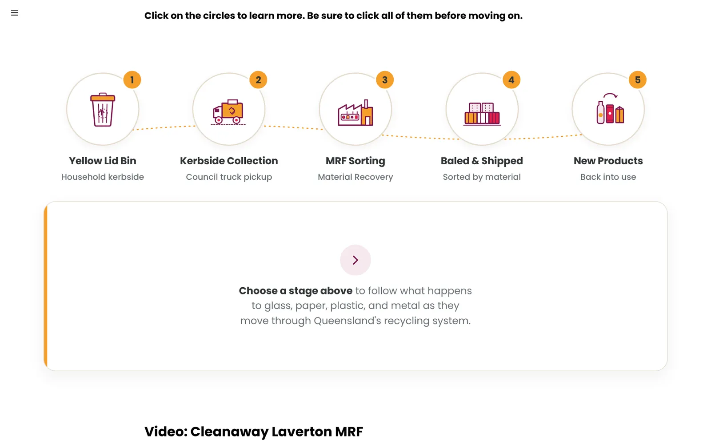
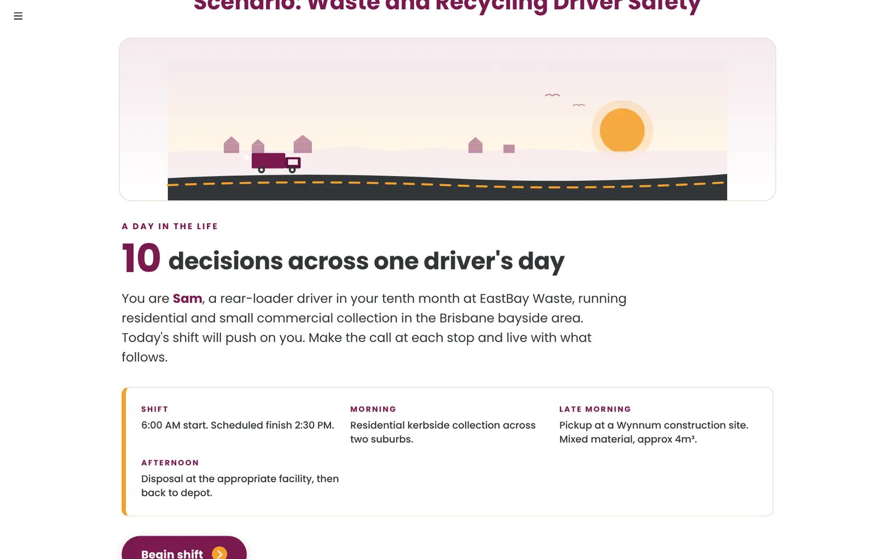

Training series for the waste and recycling industry
Here are the links to all five courses. Each course opens in a new tab.
-

Industry introduction
This course covers the fundamentals of waste management and resource recovery.
-

Site safety induction
This entry-level course prepares people to enter waste and recycling sites. It ends with branching safety scenarios.
-

Driver training
This course covers safety and compliance for heavy vehicle drivers. It ends with a scenario in which drivers make ten decisions over one shift.
-

Asbestos risk
In this course, workers learn to recognize asbestos risk and respond to it. They use the same response steps in each part of a site.
-

Circular economy
This course covers the circular economy and what it means for the industry, with interactive diagrams throughout.